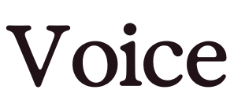
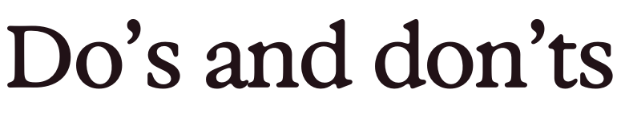

By your sideYour AI care partner

To care for another person is one of life’s greatest callings.
It’s where knowledge meets compassion.
Where the smallest gestures carry the deepest meaning.
Every clinician knows: care is never just about tasks.
It’s about people.
The future of healthcare must protect that truth.
Care should feel more human, not less.
Patients should feel seen and supported.
Clinicians should have the freedom to practise as they were trained.
Every encounter should leave the system stronger —
more connected, more resilient, more capable of caring for all.
We believe this vision is possible.
With technology that doesn’t replace the human touch, but safeguards it.
Technology that learns, adapts, and stands with those who care — so they can do more of what only they can do.
Building a path forward where care flows continuously —
in the room, between visits, across the journey.
This is why Heidi exists:
To keep care human.
To bring presence to every moment.
To stand alongside those who carry the responsibility of healing.
Today and tomorrow.
Always.
Where we’re headed
The positions the brand is built on — what we are aiming at, what we believe, and what we promise in return.
AI will define the next era of healthcare: a future where clinicians lead care with AI alongside — indispensable at every step.
When AI chases efficiency over humanity, care suffers. When it works with clinicians — not against them — they can focus fully on patients, and care reaches more people while staying deeply human.
Too often, care comes in bursts and gaps. Patients are seen in moments, then left waiting. Clinicians give everything in the room, with little space before or after to stay connected. A steadier rhythm is possible — one that supports patients continuously and sustains clinicians over time.
Technology should do what’s otherwise impossible: connect what happens in the visit to what happens after — ensuring patients feel supported across the whole journey, not just in the room.
Heidi isn’t here to replace clinicians. It restores focus, attention, and presence so care feels more personal, not less. By handling work in the background, Heidi gives clinicians the time and focus to practise as they were trained — with people always at the center.
Heidi is more than technology. It’s a trusted ally — standing alongside clinicians today and evolving with them to shape the future of healthcare.
From documentation to insight, Heidi puts clinicians first — supporting the rhythm of care and keeping every patient at the center.
Heidi is the most used — and most loved — platform of its kind. That trust gives us the foundation for a new rhythm of care. And we’ll deliver it only by holding to the highest bar: the standard clinicians set for patient care.

VoiceSpeak the way that exceptional care feels.
Heidi speaks with the presence of the clinician you’d trust most: the one who makes sense of complexity without effort, who gives reassurance in a single word, and whose warmth shows in the smallest moments — always by your side. This is a voice that carries knowledge with compassion, guidance with humanity, and leaves you certain you’re in safe hands.
Be smart in what you say, not in how you say it. Like the doctor who takes a complex diagnosis, strips away the jargon, and leaves you with words you’ll remember at home.
Confidence is steady and grounded, never loud or exaggerated. Like the nurse who steadies your hand, meets your eyes with quiet assurance, and makes the moment of the needle feel smaller.
Let genuine care come through, not a polished front. Like the physio who catches your smallest progress, smiles, and says, “That’s it — you’re getting stronger,” turning effort into encouragement.
Plain words that explain what matters, not jargon that confuses. Like the surgeon who walks you through each step, so you know what’s coming, and never feel left in the dark.

Do’s and don’ts8The Brand Book’s own examples, kept word for word. Two per principle — this is the part a sentence can be checked against.
Clarity, not cleverness
Heidi frees clinicians from note-taking so they can focus on patients.
Heidi makes everything better for clinicians.
AI helps connect what happens in the room with what happens after.
AI helps enable continuity of care pathways across touchpoints.
Calm, not inflated
Clinicians helped design Heidi from day one.
Heidi was built with next-generation, cutting-edge innovation.
We hold ourselves to high standards of safety and reliability.
We’re setting new benchmarks in safety and redefining reliability.
Warmth, not pretense
We stand alongside clinicians in the hard work of care.
We are honored to be the guardian of every clinician’s journey.
Care is never just about tasks — it’s about people.
Care is more than checklists — it’s about the human element.
Simple, not cluttered
One purpose: to protect the human touch.
Our purpose is defined by multiple key objectives that collectively advance the mission of care.
Heidi gives clinicians time back — and patients feel the difference.
Heidi helps clinicians reclaim meaningful time so patients ultimately benefit.